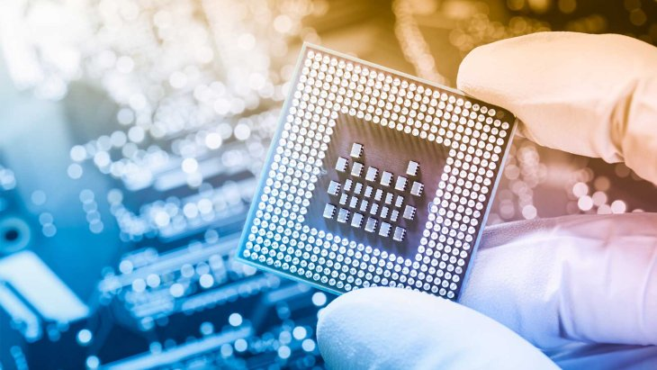

Xilinx FPGA mimarisi üzerine inşa edilen HOCS, fotonik veri iletimi ile geleneksel bakır yolların yarattığı ısınma darboğazını saniyede 4.14 TB/s hızla aşıyor.

| Metric Group | 1. Year Target | 3. Year Target | Strategic Index |
|---|---|---|---|
| Operational Budget (OPEX) | 1,073,900 ₺ | 2,432,775 ₺ | TÜBİTAK BİGG Support |
| Revenue (HOCS Dev-Kit) | 425,000 ₺ | 27,625,000 ₺ | 85k / Unit Pricing |
| Break-Even Point (BBN) | 11.13 Units | Achieved | Tier-3 Scalability |
| LTV / CAC Ratio | 6.0 | Healthy | Growth Investment Factor |